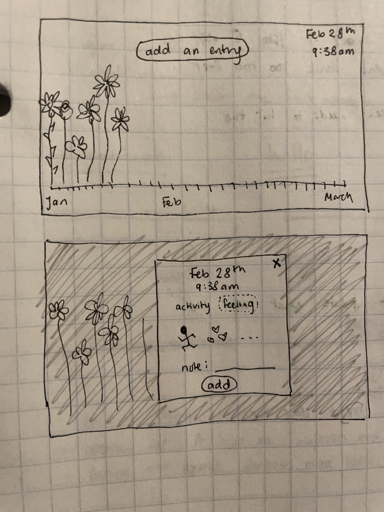

Final Project Proposal
Concept
I am planning on creating a site that will create a garden visualization based on user's emotions and activities
throughout the day, like a visualized diary entry.

Prototype Version
Here are the main functions that I desire for this site:
Display a page of flowers that stretch across the page, corresponding to the days in a month
Have a pop-up page that shows the different features that users can log into their diary
Have user input that will add to their garden in a minimal way
Final Version
For the final project, I want to add in certain aspects of the project:
Making different graphics that correspond to different emotions and activities in the day (leaves, colors, flower type, length)
Having user authentication so that different users can secure their information and store data on the page
Connecting a time and date API to display time / data when people log in entries
A CSS layout that has the same branding and layout throughout everything: probably something with an earthy, floral theme
Development Plan
3/2 - Create the prototype, and connect a firebase account to it for user input
3/3 - Make user input correspond to graphics appearing on the page based on the type of input (key words)
3/5 - Create the CSS, HTML, and JS functionality of the main page and pop-up page
3/7 - Submit Prototype Version
3/10 - Create OAuth for users to log into their account
3/12 - Finish up and finalize graphics
3/13 - Connect a time and date API to correspond to user input for specific dates and times
3/15 - Finalize branding overall
3/17 - Submit Final Version
Known Unknowns
How to connect the APIs to correspond to the current date and time and placing the flowers in the right place based on that
Uncertain about specifics with using Firebase and authentication (but I did watch the walk-throughs so hopefully it's okay)
Stretch Goals
Connecting a weather API as well to display the weather for each day